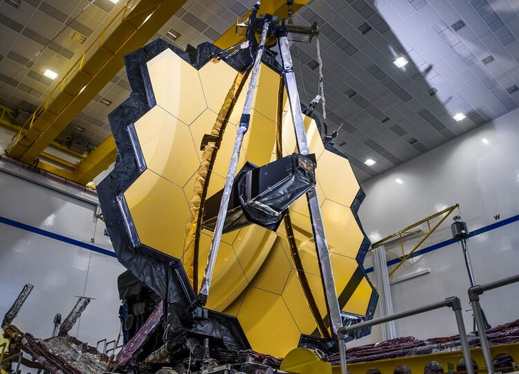

Au XXIe siècle, l’astrophotographie n’a plus rien à voir avec ces débuts. Maintenant, il y a des télescopes en orbite tel que Hubble et bientôt le JWST (James Webb space telescope) qui permettent de voir toujours plus loin et toujours plus clair.
Mais ce n’est pas parce que l’on n’est pas dans l’espace que l’on ne peut pas faire de photo du ciel. En effet, depuis l’inventions des Dobson et des caméras numériques, il n’a jamais été si simple de se lancer et de photographier soi-même le ciel nocturne.

Voici le JWSP